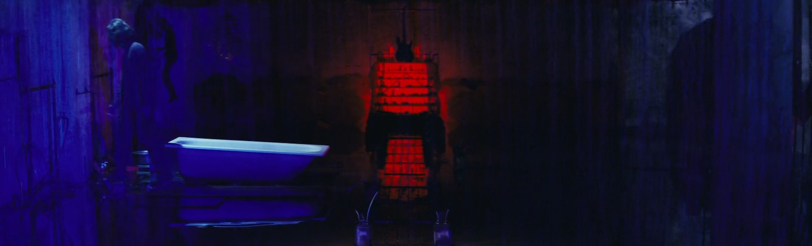

Rooftop
sexual content?
it is a week later and i am lonely. that is how long it takes, a week, before i am sure i can hold myself together when i see him again. it is a week of eradicating thoughts, of killing images and sensations, of throwing up, of throwing up, of throwing up. the week is simple. wake up, go back to bed. eat once every 3 days. sometimes i will make myself breakfast, go through the whole routine, plate, spoon, box of food, pour, table, done, and at any point in time i will think of his body against mine again and it will all be for nothing because i won't be able to eat. it is knives under fingernails. i am a dulled nerve, every waking synapse extinguished before spreading. i stare at the walls and i sleep and i pray i don't dream of him again. nothing is done. it's normal, it's all normal. it's healing, recuperation, cleansing. it just takes a while.
when i was 7 i saw the word for the first time, it was in a magazine my aunt forgot to put away. i saw it there - bodies, skin, hands, "sex", that's the word. i asked her what that word meant, and she refused to explain it to me, and i put two and two together, understood it meant the bodies, skin, hands, and i knew it was wrong, in this godless, primal way. that i should avoid it, that i should not think about it, or anything like it. that it was the most wrong thing i had discovered up until now. i took the idea and my thoughts about it, and i took a shovel and buried it under layers and layers of dead soil. the same way i did with the word 'shit', or 'fuck'. i understood the bodies, skin, hands, as things not to be thought about. i understood the naked body as something that should rightfully exist alone, privately, far away from anyone else's.
when i was 7 digging the grave and burying the idea was easy because i was young. i was too young to feel what people felt for it. when i was 10, 11, it changed. it was a different catalyst this time, an advertisement on a bus stop, a billboard on the wall, whatever, it was pictures of the same bodies, skin, hands, it doesn't matter what it was because what it provoked within me was worse, i saw it again, the bodies, skin, hands, resurrected like spectres from the soil, and i saw them at night and in the showers and in other boys and i fucking hated it. i wanted to throw up. felt it like sticking webs in the interstitial spaces between my blood vessels and bones and throat. i hated it and i wanted it, wanted it, and i hated myself for wanting it. i was a boy, and i was programmed to want it like any other boy, but it was too much, too fast, too everything. there was nothing i could say. i implicitly understood that there was nothing even to say, that saying something to anyone would be wrong because the thoughts themselves were like my own body, meant to be sequestered, private. suffered alone.
when i was 12 it wasn't private anymore. another boy talked to me about it. great detail. talked about how his parents weren't home, talked about how it was late at night, talked about the motion, the actions, the material, the everything. talked about how it "came out". it was too much, too everything. he thought we were the same. that i understood this language he was speaking to me. i stood there and i listened and i felt something cosmically twist within me, some unknowable uncomfortableness, like by listening in i was doing it myself. but it was just boys being boys, this conversation. normal. 12 is when it usually starts. girls are who it's usually for. the nights are when, usually, and it's 5 minutes to 10, how long it lasts. what you use to do it, what you use to clean up. this mental tapestry i wanted to burn.
i did it once. i was 13. it took 3 minutes in the shower. it was over as soon as it started. i got out of the shower and forgot about it. i slept with my legs crossed that night, and the night after that, night after that.
and then there was love. i knew about love, of course. love was easier. love was a concept with less jagged edges - love is beautiful, love is kind, love knows all. love thy neighbor. love yourself. all good things. i harbored it for a few others, but it was always for the wrong people and i understood, out of self-preservation, that it was for the wrong people. and so it was relegated to a different grave. i buried it with different soil. burial all the same though. and when it came back alive it was not ghosts or monsters or spectres but a slow oozing of red blood through the dirt, gradual and unstoppable, fluid working its way through microscopic gaps in the ground, saturating and filling all the cracks. that was what my love was. something to slowly drown in. no solace in love, no comfort in lust. sin all the same.
like all things you get used to it.
i am sixteen now. it has been a week since he slept over and i dreamt about him fucking me. it is a week after i threw up in front of him and he sat next to me in the bathroom giving me water and telling me i was going to be alright. and i am lonely. i do not want to be fucked. i just want to see him again. it has been a week and i am lonely.
i text him. he says he will take 45 minutes to come. that he's wondered where i've been, if i was okay. says he missed me a little. he comes 28 minutes later. we are on the rooftop of a 101-storey building. it would take more than five seconds to hit the ground from here. the roof is the same disgusting grey everything else is but from here you can see the sun and it is only occasionally beautiful.
hey i'm here. i brought food and some drinks and shit if you want it.
i do not look at his face.
sooo why'd you want me to come here?
i dunno it's just been a while and i wanted to hang out.
oh that, sure, but why here?
mm. i just like this place specifically. feels like i'm above everything instead of drowning in all the concrete.
i get that.
and you can see the sun from here.
mm. yeah. the sun's way brighter today. it's way hotter.
oh?
you even gotta shield your eyes to look at it now. you picked a hell of a day to lounge around on a rooftop man it's fucking boiling.
the heat is nice.
for you i guess. jeez. i mean it's good though. have you been out in the sun much the past week even?
no.
you gotta get that vitamin d and shit. whenever i got sick my dad used to make me sun my back in the mornings. he said it was for that. the vitamin d. i don't know if he was lying to me, but it did feel good.
at the very least it's probably not-not good for you.
he picks up a bottle of coke from a plastic bag filled with snacks. i look inside, chips, another 1.5l of coke, whatever.
you know, - he takes a sip - if you get some cokes from the vending machine near the liquor store one in three of them come out warm. you ever had that?
liquor?
no, a warm coke. actually yeah sure that's a better question - you ever drink before?
a few times, but it never really goes well. so i just don't do it much for my own sake.
mm. i wanna try it someday.
you never have?
nope.
you'd probably like it. it's famously very good for you.
after a week of forgetting again i remember, i remember the sound of his laughter and his lime jacket and his words and i remember how it feels to sit next to him - good, it feels good. warm. and it all stands on this precipice above nightmares and bodies, skin, hands, and vomit, and disgust, needlepoints on needlepoints, the wrong move could tip it over, force another week or maybe two. hands accidentally touching, an incorrect phrasing, or looking at him for too long. it is a careful balancing act. we sit talking on the roof for hours. it is good.
you live in a fucked up place. this is ugly as hell.
thanks for the kind words.
actually though. it's like. somehow the buildings here are uglier.
they're the exact same as every other building.
it's just worse for some reason. uglier energy.
that implies there is something within the city limits that is not ugly.
yeah there is.
that being?
me motherfucker. i'm beautiful.
debatable.
i'm the hottest bitch on the planet frankly. certainly the hottest bitch on this rooftop.
sure. anyways it's not even like your house is particularly beautiful either. it is also the same shit. same buildings.
mmm. it's just better. i have a better view of things.
view of what, exactly?
the people. sometimes i stare outside the window and just look at the people and shit. yknow.
really?
yeah, i just look - i like seeing people walk and move around.
why?
i dunno. it's not like they're alive, but they're not-not-dead. like there's still something there. it's fascinating to me, like a microscope shot of a virus. you know they still don't really know if viruses are alive.
mm. that's fair enough i guess. i get what you mean.
the kind of people that walk around on these streets, sleeping on them, they don't know what to do. they're all like. i don't know how to put this.
do you pity them?
no, no. i mean it's hard not to. it's hard not to pity anyone who's here.
i guess?
but it's different. it's not pity. it's like...
was your father the kind of person to wander around like that?
yeah. damn. yeah. basically.
mm.
that makes so much sense.
it does.
see you finally get me. because, well, i used to walk around with my dad on the street and it would be 2am and i'd be 8 and he'd start telling me about how the bridges were serpents and how these towers were built by satan. and how he was the only one he could see it. and now whenever i get approached by people on the street and they're all not fully there, you know, talking and mumbling about something, or sometimes maybe they're just asking for money on the street... i don't know.
you just care too much. you got too much love in your heart. that's your weakness. having too much love.
exactly man. i'm a lover.
too much compassion.
i'm too good of a person.
i feel like we're the opposite when it comes to strange people on the street.
do you think all of them are trying to kill you?
no, i just avoid them for my own sake. can't risk it.
i guess you just don't have the love i do.
darn. what am i ever gonna do.
he laughs out loud, and i hear it, and it's sweet and beautiful and warm and i laugh too.
my dad used to think he was like, jesus, or a prophet, or god himself. he'd tell me this.
was he?
i don't think he's jesus but he's not far off, for sure.
what else did he think?
he told me to never kill cockroaches because they were also messengers of god. and he took me to the lake one day and he saw a fish and he started crying because he said it was the most beautiful shit he'd ever seen. it was a tiny little fish.
was it beautiful though?
mm. now that i think about it, yes, it was.
so really he was right.
he was right about a lot of things. he was wrong about a lot of things too, though. he'd forget to feed me sometimes. i learned how to steal shit when i was 7. just out of necessity.
that's a good skill to have though. you have to be small and quick.
it's easier with a friend. one to disconnect the detectors at the door and the other to take the stuff.
we should steal stuff sometime.
yeah? what do you wanna steal?
hmm.
food is easy but you need to steal a decent amount of it to make it worthwhile. pens and stationery are good too, small. compact, easy to hide in a pocket. you can steal makeup very easily too but we'll probably stick out too much. we're two boys and we don't belong in a makeup store. but if we can it's worth good money. there's also video games and stuff but they keep a close on eye on them just because of how valuable it all is. many choices.
a car.
well. i don't know about a car.
we could have a car. imagine.
a car is hard to steal.
but it'd be a car. and it'd be so cool. i wanna get a shitty beat up car. just some real fucking shitbox. imagine that. god.
why a car?
why not a car? why not, man? think of all the things we could do. we could drive.
we certainly could drive. that's a thing you do in a car, yeah.
we could just cruise around. we wouldn't need to walk miles out of the city. we could just go. and it'd be cool.
it would be.
do you know how to drive?
i don't. do you?
no. but that's okay. i can learn. plenty of open space to learn. can't be that hard either. just steer the wheel and step on the gas and or the brakes and shit. dude. we could do this. me and you.
you mean you have this entire fantasy about us having a car and you don't know how to drive?
i can learn. promise. trust me. i'd be driving. i can learn.
hmm. you know what.
what?
i know where we can get a car.
oh?
yeah. i'll take you there next week.
eventually you have to show me where you buy the materials.
mmm. you just gotta know where to look.
yeah that's what i'm asking. where do you look?
it varies. i get it from 3 different stores, i just go to whichever one's cheaper at the time.
do they like, recognize you?
oh of course. i'm real friendly with them. they're nice people.
really?
yeah none of them are really stores. it just happens that they have a lot of it as like, byproduct, and they sell it to whoever wants it.
i see. you're their garbage boy.
basically yeah. i'm cleaning up their trash. but one man's treasure is another's trash. that's what they say.
what are the rates like?
they're good but it's not like there's competition. so even if they stiff you take whatever you can get. that's why it's important to befriend them. with me and my winning charisma and sparkling smile it's easy. maybe you'd have a little more trouble. you have weird shifty eyes.
is it only raws or do you buy completed items too?
items?
yeah, items.
ohhhhh. items items. well those are way different. that's a whole different thing.
how different?
different vendor. also well. no vendor. i steal it.
from where? who has these just lying around?
you'd be surprised. but there's again, never a specific source or anything. no one's making them consistently. it's all like you just gotta see what's up.
crimes of opportunity.
yeah that's the words. crimes of opportunity.
a lot of time with your ear to the pavement.
well, if you know you know. you know.
did you ever do this with anyone else before me?
nope. you're my first partner.
honored.
i've been doing this for years though. so it's nice to have someone to do it with.
i like having someone to do stuff with too.
hooray. the first one i ever did was less violent. i just knifed the wheels of a cement truck when it was parked. not so exciting.
how old were you when you did that?
oh, like ten.
damn. when's the first time you blew something up?
that's a harder operation. about 4 years after, so when i was 14. it was just the same, another carpark in the middle of nowhere.
you ever get caught?
no because i'm good at it. but anyone could do this really. there's a lot you can learn if you just find the right files, read the right books.
you gotta turn me onto those books then.
well, that's what i'm trying to do. teach you all this. to be clear i wouldn't've let any old fuck tag along with me. i just thought you seemed cool.
once again i'm honored to be part of the exclusive club.
you're welcome. you know when we first met i thought you were heat at first. and i fucked up with my cover.
turns out i was just weird.
turns out you were just weird.
sorry for following you. i just thought you looked cool too and i had nothing else to do.
at least you thought i looked cool. that's apology enough.
just so you know i was following you for maybe two days before you finally noticed.
hmm. i'll choose to think about that some other time.
a small pause.
fuck man i'm tired. long day.
what did you do all day?
lot of errands. had some stuff to pick up. went to my dad's grave. did the rock shit again - that was fun. bought the stuff i bought. bought snacks. came here. so much walking.
the rock shit?
the rock shit. yknow.
ah. the rock shit. mm.
sorry. by the way. i don't think i ever said it properly but sorry about that.
it's good.
no i should've known it was gonna be different for you. shouldn't've pressured you into it.
you couldn't have known. it's okay.
mm. if you say so.
have you gotten anyone else to do it?
the rock shit? nope.
first and last then.
mm. it might be. might be good to just keep it for myself.
i'm not sure anyone else will understand what you're trying to do if you introduce them to it. i feel like i understand, vaguely, and it's still off, somewhat.
it's hard to explain. but i mean, most of the shit we do is.
yeah. do you think that's our fault or everyone else's?
everyone else's. but i wouldn't use the word 'fault'. that's saying there's a responsibility.
mm.
i think we're right. what we're doing is right. but it's not their fault for not knowing it's right.
then now it's your responsibility to teach them what is right. that's the natural conclusion of your thinking.
what do you think i'm doing here?
i'm one person. you need to proselytize. educate, so on.
maybe when i'm older i'll do that. for now this is just for me. and it's for you too, a little.
at some point we've got to graduate. spread the good word of god instead of playing around in the kiddy pool.
i'm content with being here for now.
you ever date anyone before?
uh. nope.
why not?
just never had the opportunity to i guess.
sure sure. you ever had a crush before?
once i guess, like five years ago.
what was she like?
h-
shit.
she was just a coworker. my aunt used to make me work part-time at a warehouse because i didn't have anything else to do.
when you were 11?
yeah. it was like data entry and stocktaking and stuff. it was fun. they sold building materials.
why'd they have an 11 year old in charge of stocktaking?
i wasn't 'in charge' of it i just did it occasionally. also i was pretty good at it.
you were 11 though.
11 year olds can be good at things too.
sure, sure. but you didn't tell me much about this 'warehouse crush'. gimme details.
uhh. she was like 18 and i was lonely and bored and i only ever talked to her. i didn't have many people to talk to at home or at the job so i just. latched on to the first person i found.
mm. i get that. was she cute?
not even, i dunno. i look back and i don't really know what i was thinking. you know. it just happens like that. i got over it in a month.
so you've never liked anyone after that?
not really, no.
i take a coke. it's one of those glass ones with the cap that you can't unscrew easily, and i try to get a good grip on the cap but it's shaped a little awkwardly and i don't have much experience trying to open glass bottles so it's 2 minutes of fiddling with it and my fingers start to hurt, and he's looking at me a little funny until he takes it from my hands, slams the edge of the cap against a ledge and it pops open immediately. hands it back with a smile i don't look at.
what about you?
right now? some girl from my class.
ah. does she know?
i don't think so.
i mean, does she know you're a terrorist?
no one knows i'm a terrorist. also it's not terrorism. it's different. also you would be a terrorist too. you would be my terrorist accomplice.
we're terrorists together. you and me. what we're doing is terrorism. that's not a bad thing but don't get any pretenses about it.
it's not terrorism.
you're torching buildings and structures because of a vague incomprehensible religion you hold.
it's not incomprehensible, it's very normal actually. it makes a lot of sense. rational even.
to be fair it does. i was just fucking with you. but it's still terrorism though.
i'm just a principled man.
is it religion or is it principle?
it's religious principle.
if it's a religion only you and you alone believe in is it even a religion?
that's a dumbass question. obviously yes.
is it a dumbass question?
yes. anyways she's cute. here's a picture.
i look at the picture. she is cute.
she's cute yeah. do you think you have a shot if you tell her you're a terrorist?
i can't imagine if i described myself as a 'terrorist' that she would like the idea. but i'm not really trying to 'have a shot' or anything. i just like thinking about things. i'm never pursuing her really.
why not?
because i'm a terrorist.
naturally.
but also because, i dunno. it's just. i don't know.
if she was in front of you right now, on this rooftop, and you were being friends and talking to each other about some stupid shit, would you shoot your shot?
fucking, man. maybe?
maybe? why maybe?
it's just nice to look. i like looking. and if i "shoot my shot" then i wouldn't be able to look anymore.
so you're a coward, basically.
in a word, yep.
you ever dated anyone before?
nope. haven't really gotten close either.
i'm guessing you don't really want to. you just want to, as you put it, 'look'.
yeah, honestly. is that so bad?
i wouldn't categorize it as bad, no.
you ever think you'll marry anyone in the future?
hopefully. that seems like it'd be nice. settle down with someone somewhere far away from here.
far away from here?
yeah. far away from here.
where is 'far away from here'? there's nothing that isn't 'here'. it's all just this.
maybe we could live in tents together by the river or something. eat dead birds.
you wanna be some like, nomad? you wanna live off the grid?
don't tell me that doesn't sound fun. just me and my theoretical partner and the sun.
shit, now that you talk about that, it doesn't sound so bad. sounds nice actually. just living out in the fields or finding some old buildings outside of the border to put up in.
you see the vision.
i do. mannnnnn. i want a wife or something. or anyone really. anyone will do. a wife would be nice though. we could be terrorists together, me and my wife.
you and your terrorist wife.
yeah. my beautiful terrorist wife.
i thought you'd only like looking though.
well, that's now. who's to say when i grow up and become a beautiful adult terrorist that i'll have different opinions on it.
i mean, right now though. what is it that you want? do you want to just 'look' or do you want the companionship? do you just wanna hang out with someone?
hmm. that's tough. let me think.
he thinks about it. i look at him, purposefully, for the first time in a week, and it's the same face and body and hair and hoodie i've tried to extinguish from my thoughts for a week, but now it's just us, friends, and it is nice. i am lying to him and provoking this conversation with a boldness i did not know i was capable of. the thoughts i'm thinking are obvious. they would have been put against the wall and executed three, four days ago, had they come up. i do not know how i can think them so freely now. but it is warm on this rooftop and the sun is shining dimmer and dimmer.
i don't know. i just want a wife.
or anyone?
a wife or anyone.
it's getting dark.
it is. the moon is beautiful today. half-full.
how long has it been?
five hours.
this was fun.
it was.
you know, you can see it from here.
it?
come here.
i stand up, he follows. i take him to the edge of the rooftop.
oh.
there it is. about 500 metres away. at the very centre of the city, smothered amongst concrete and steel and rebar and hell, is 'it'. it's five hundred meters tall, and at its base it measures around 300 metres by 300 metres, black and sloping towards the single point at the top, steady, evenly. it is maybe fifty percent taller than the surrounding structures. it does not have a name, sometimes people just call it "it", or "that", "something". to call it the 'beating heart' of the city is wrong. to say so would suggest life, skin, a plexus of blood-filled capillaries, fresh air in lungs. it is not. there are no doors, stairs, windows. just a shape carved out of reality. as if you could throw rocks and bricks into it and they would die. inanimate objects can die, the same way we can. i have seen it with my own eyes. its walls are too steep to scale. manmade, godmade - (what's the difference) - who knows. it is walked away from, around, above, never into. it is present in a way only the absent can be.
it is a pyramid, pitch-black. it is made of billions of corpses of dead birds. i am standing with him, looking, and i see it for what it really is. not even nothing.

Glass